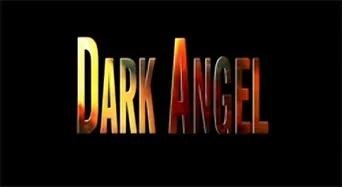

The genetics
Genetic engineering drives the whole series. Max and her fellow X5s are transgenic supersoldiers designed and raised by a covert military programme, and later seasons add creatures with conspicuous animal DNA, such as the dog-like Joshua, and clones such as Alec, a copy of Max's brother Ben. Manticore embodies the state using genetics to make weapons. The second season moves the focus to discrimination: once the transgenics are freed, they are feared and hunted, and Max leads them to claim a place in society. It also adds a mythology about heredity, with a millennia-old cult that has bred its own advanced humans and Sandeman, the cult renegade who created Manticore and hid in Max's genome a message and, in the plans for an unmade third season, a genetic immunity meant to save ordinary humanity. Critics have compared Max to a postmodern Frankenstein's monster who blurs the boundary between human and monster; the science is not meant literally, but the show uses it to explore identity, family and who counts as human.
How genetics is portrayed
- Overall portrayal of genetics
- negative Genetics is mainly the tool of a military programme that commodifies bodies and of a eugenic cult; the viewer sympathises with Max and the transgenics, but that sympathy for the products is not a positive view of the science.
- Outcome of the genetic intervention
- negative The engineering yields abused, barcoded child soldiers who are hunted and feared, a virus that keeps Max from Logan, and a eugenic cult's extinction plan; the series ends with Terminal City besieged by the military.
- Manticore
- villain Aim: military (negative). The covert government facility engineers transgenic children as supersoldiers and assassins, barcodes them, hunts escapees and infects Max with a virus to kill Logan; it is the series' antagonist and is burned down to hide its crimes.
- Sandeman
- ambivalent Aim: benevolent, military (mixed). The cult renegade founded Manticore and made the first transgenics, but hid sequences in Max's DNA meant to give humanity immunity against the cult's plan; the show presents him as a betrayer of the cult with good aims achieved through a weapons programme.
- The breeding cult (incl. Ames White)
- villain Aim: ideological, power (negative). The millennia-old cult breeds its own advanced humans and expects the extinction of ordinary humanity, and its agent Ames White hunts the transgenics and tries to kill Max; it is presented as a eugenic villain.
The story
In 2009, a group of genetically enhanced children, trained as soldiers and assassins, escape from Manticore, a secret U.S. government facility. Months later, terrorists detonate an electromagnetic pulse that throws the country into chaos. Ten years on, in a run-down Seattle, one of the escapees, X5-452, now calling herself Max Guevara, works as a bicycle messenger and burglar while searching for her "siblings" and evading Manticore's hunters, led by Colonel Lydecker. She helps the cyber-journalist Logan Cale, alias Eyes Only, fight corruption, and the two fall in love. In the second season Manticore is exposed and burned, and hundreds of transgenics, some with animal features, are released into a hostile world. Max learns that Manticore's founder, Sandeman, was a renegade from an ancient breeding cult that plans the extinction of ordinary humans and that he hid special sequences in her DNA. The series, created by James Cameron and Charles H. Eglee, ended after two seasons with the transgenics besieged in Terminal City.